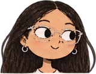
Oi! Eu sou a Rebeca 💜
Estudo Ciência da Computação na UFCG e uso tecnologia pra facilitar a vida das pessoas.
- IA aplicada a problemas reais
- Educação
- Inclusão digital
- Representação estudantil
- Vôlei
Role a página e vem comigo.

Oi! Eu sou a Rebeca 💜
Role a página e vem comigo.
Tudo começou em Floriano, no Piauí.
Fiz o técnico em informática integrado ao ensino médio no IFPI, campus Floriano, e me formei em 2021.
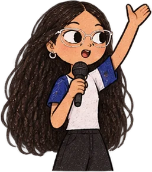
Foi lá que percebi que gosto de me envolver.
Participei de várias atividades extracurriculares e fui presidente do grêmio estudantil.
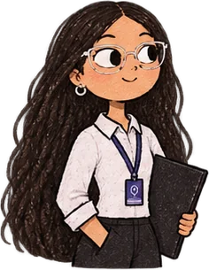
Depois do técnico, fui trabalhar.
Entre 2021 e 2024 trabalhei como jovem aprendiz.
Em 2024 arrumei as malas e vim pra Paraíba.
Entrei em Ciência da Computação na UFCG, em Campina Grande. Hoje estou no 6º período.
Floriano, PICampina Grande, PB
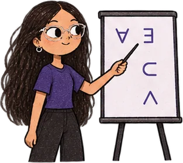
No 3º período fui monitora de Fundamentos da Matemática para Computação.
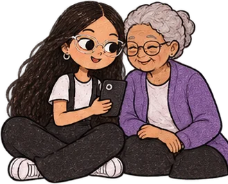
Também fui voluntária no programa de letramento digital para idosos.
Educação e inclusão digital são duas das coisas que mais me movem.
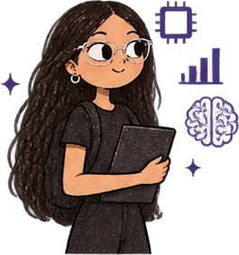
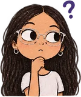
Pesquisa com IA virou parte da minha rotina.
Fui voluntária por 3 meses numa iniciação científica sobre o uso de IA na geração de laudos. Hoje faço parte do AvaliAi, um projeto de pesquisa que desenvolve uma plataforma para avaliar o impacto de projetos sociais usando IA.
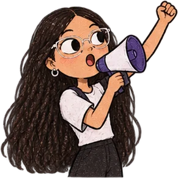
Em 2025 entrei no CAESI.
No centro acadêmico do curso atuo ativamente na representação dos estudantes de Computação.
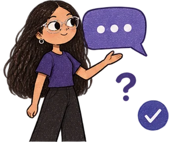
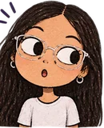
Toda semana chegam muitas dúvidas pra mim.
Como representante, recebo perguntas sobre vários processos do curso, e a resposta nem sempre é fácil de achar. Por isso comecei o caesi-help: um chat que responde com base nos documentos do curso e em tudo o que eu sei, para ajudar mais estudantes e diminuir o trabalho repetitivo.
Oi! Sou o caesi-help. Escolha uma pergunta aí embaixo 👇
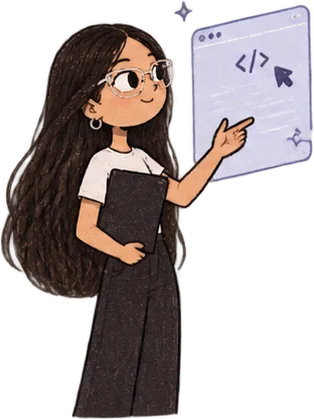
Algumas coisas que estou construindo.
Problema: dúvidas repetidas sobre processos do curso que chegam toda semana aos representantes.
Meu papel: comecei e desenvolvo o projeto.
Problema: avaliar o impacto de projetos sociais usando IA.
Meu papel: faço parte do projeto de pesquisa.
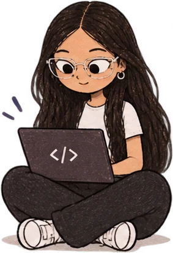
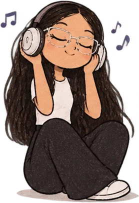
Fora da tela, sou apaixonada por vôlei.
Jogo vôlei como ponteira desde o ensino médio. A quadra me ensinou muito sobre trabalho em equipe e motivação.
Música: sou de MPB e amo Djavan e Tim Maia.
E agora?
Os próximos capítulos ainda estão sendo escritos. ✍️
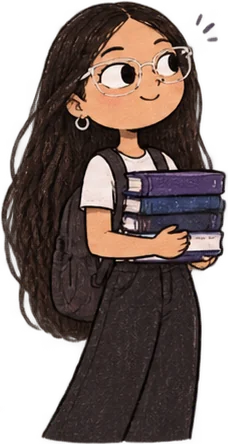
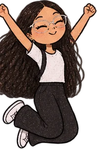
Vamos conversar?
Estou aberta a estágios, pesquisa e projetos com impacto social.